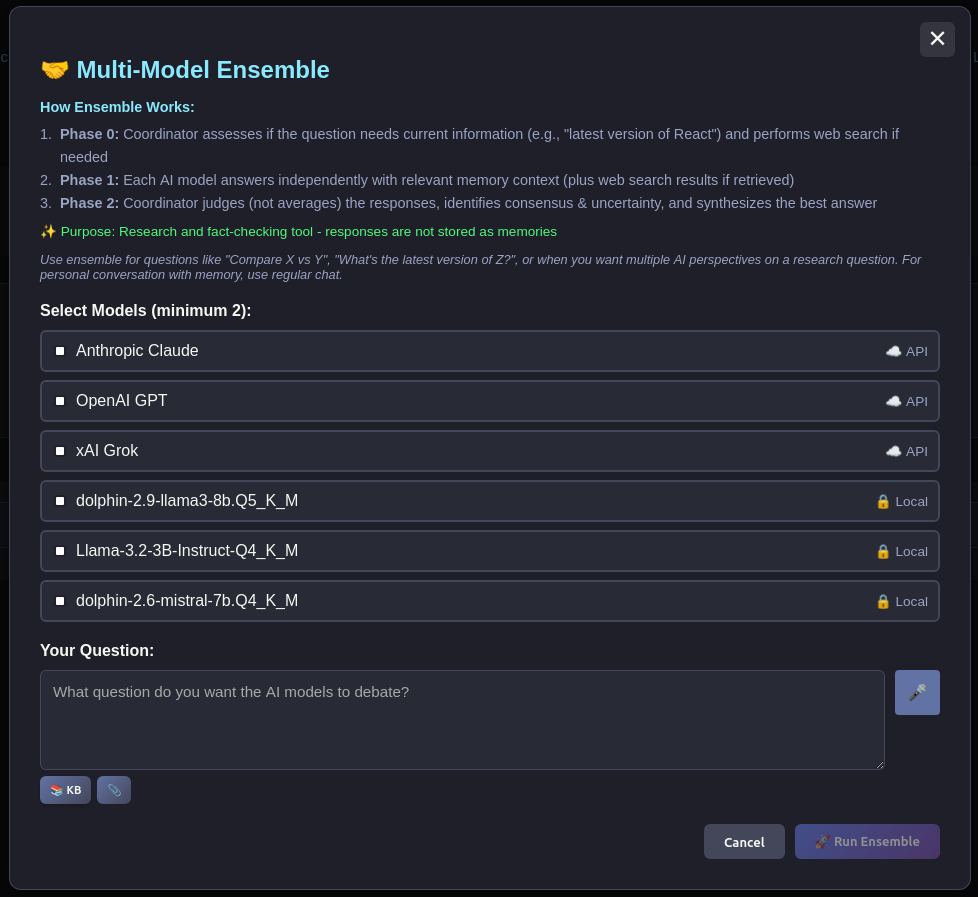
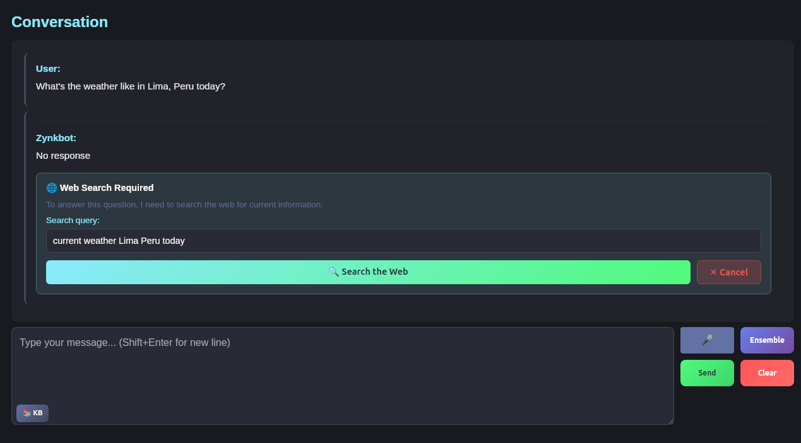

Most AI tools are vertically integrated: the memory lives in the same system as the model. If you want to switch models, you lose your history.
Zynkbot separates the memory layer from the model layer entirely. Your accumulated context — everything Zynkbot knows about you — lives in a local database under your control, completely independent of which AI you're talking to. Switch between a local model, GPT-4, Claude, Grok, and Mistral in the same conversation, and Zynkbot maintains continuity throughout. The model is the face. The memory is the relationship.
In practice this means you can use the most capable model available for complex reasoning: Claude for an ethics question, a local model for private tasks, or a specialized model for specific domains — without any of those choices breaking the continuity of what Zynkbot knows about you. You're not locked into any provider, and your personal context doesn't live in any of their systems.
For local inference, Zynkbot supports Ollama and any OpenAI-compatible server (LM Studio, llama-server) as first-class backends alongside the cloud providers. Run Llama, Qwen, DeepSeek, or any GGUF model on your own hardware — no API key, no subscription, nothing leaving your machine. On Android, your phone can proxy through your desktop's Ollama instance over your home network via ZynkSync.
The Ensemble Mode takes this further: query multiple models simultaneously on the same question, see their responses side by side, and let Zynkbot identify consensus and flag disagreements. Useful for high-stakes questions where you want more than one perspective, or for fact-checking responses against each other. Ensemble mode results can be introduced at any point in an ongoing conversation.

When a question requires current information beyond what's in your memory or knowledge base, Zynkbot can perform a web search and incorporate the results into its response. Like everything else, this is on your terms — triggered explicitly, not automatically. You can approve the search query or alter it if you choose.
